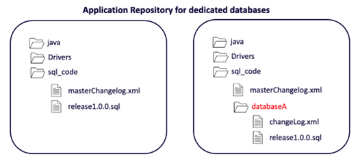
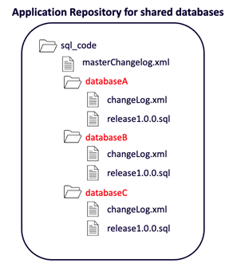

This document discusses use cases when there are multiple teams that deploy to the same database instance. We will discuss the following two use cases in this scenario:
This is a common use case for applications that integrate multiple subsystems. Multiple teams, each with their own Git repository, deploy database changes into their own dedicated databases in the same database instance.
| Team | Service account | Database |
|---|---|---|
| Team 1 | svc_team1_dbA | DatabaseA |
| Team 2 | svc_team2_dbB | DatabaseB |
| Team 3 | svc_team3_dbC | DatabaseC |
| Team4 | svc_team4_dbD | DatabaseD |
Each team will dedicate a directory in their repository for database changes. In this directory, they can manage all their scripts along with the changelog.xml file. The team can also create a directory for their database.
In the case of a team deploying to multiple database, they could organize their repository where they have a subdirectory for each database.

The team needs a master changelog file which can control the flow of all changes to all database.
See the section “Deploying with Liquibase” later in this document for sample scripts.
In this use case, multiple teams, each with their own Git repository, deploy database changes to one or more shared databases. This use case is common for legacy applications that have added subsystems over time or other complex application architectures.
| Team | Databases |
|---|---|
| Team 1 |
DatabaseA, DatabaseB, DatabaseC |
| Team 2 | |
| Team 3 | |
| Team4 |
There are three important considerations here:
DATABASECHANGELOG and DATABASECHANGELOGLOCK) will be created only in one database that is specified in the URL. Deployments to multiple databases will be tracked by a single DATABASECHANGELOG tracking table in the database specified in the URL.It is important to understand that teams must communicate with each other about their database changes going into shared databases. Database changes often have dependencies, and these changes need to be coordinated so that they are deployed in the correct order.
When multiple teams share common schemas, it is not possible to use each team’s own application repository. This use case requires setting up a dedicated SQL repository for shared databases.
The team needs a master changelog file that can control the flow of all changes to all databases.
See the section “Deploying with Liquibase” later in this document for sample scripts.
Here is a sample masterChangelog.xml file which can be used in a multi-database repository:
The basic script for deploying with Liquibase using a single service account to deploy to multiple shared databases looks like this:
The script for deploying with Liquibase using proxy users to deploy to one database at a time looks like this. This is for the SQL Server use case (not the use of --default-catalog-name argument):
Liquibase automatically creates DATABASECHANGELOG and DATABASECHANGELOGLOCK tables (also called DBCL tables) for tracking deployments. These tables are created in the default database for the user connecting to the instance.
If you want your DBCL tables to be created in another database, e.g., a dedicated database for Liquibase tracking only, then you can use the --liquibase-catalog-name=<database> to indicate your specific database. You will need to make sure that the service account allows creating DBCL tables in this database, as well as querying these tables.
--liquibase-schema-name=<database>
--default-schema-name=<database>